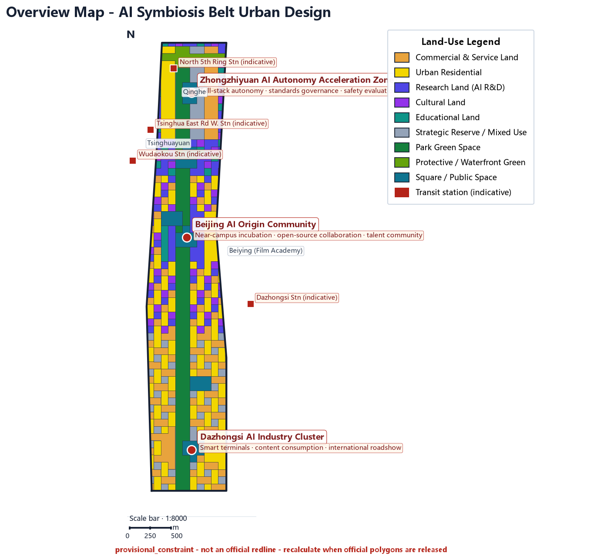
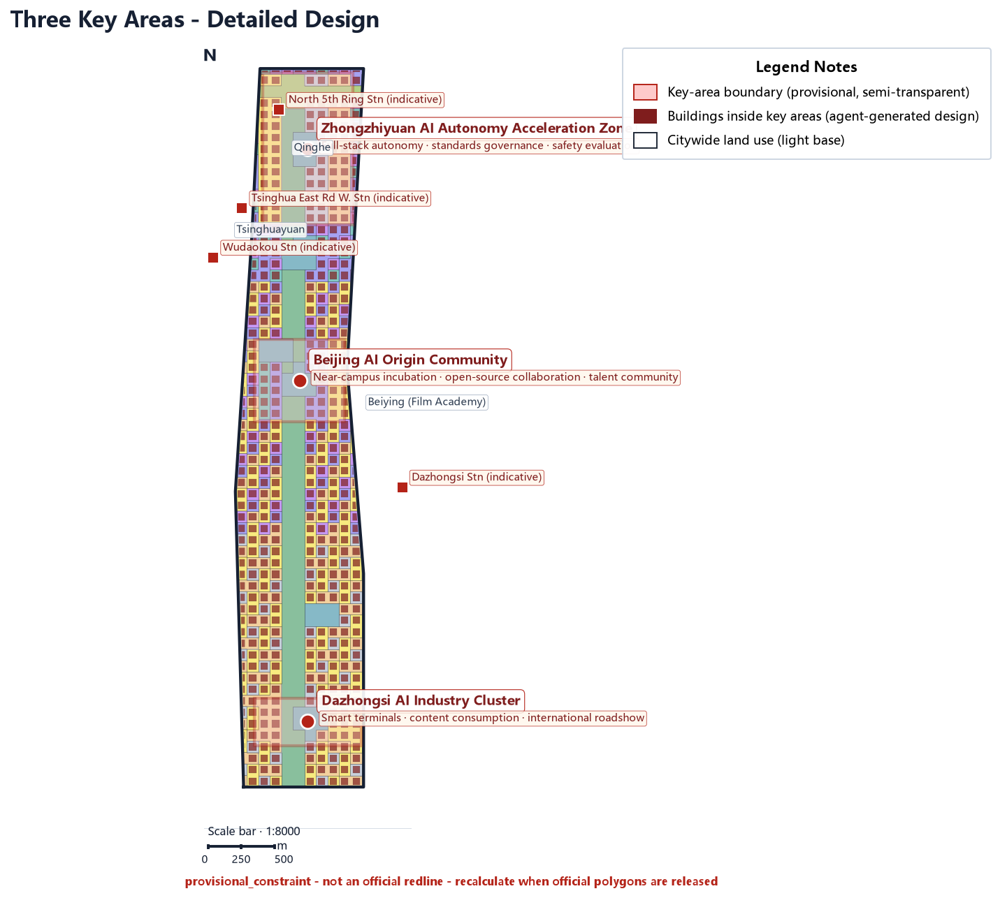
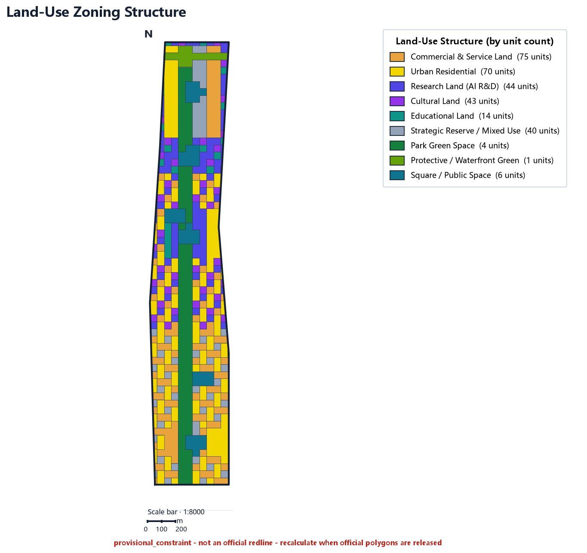
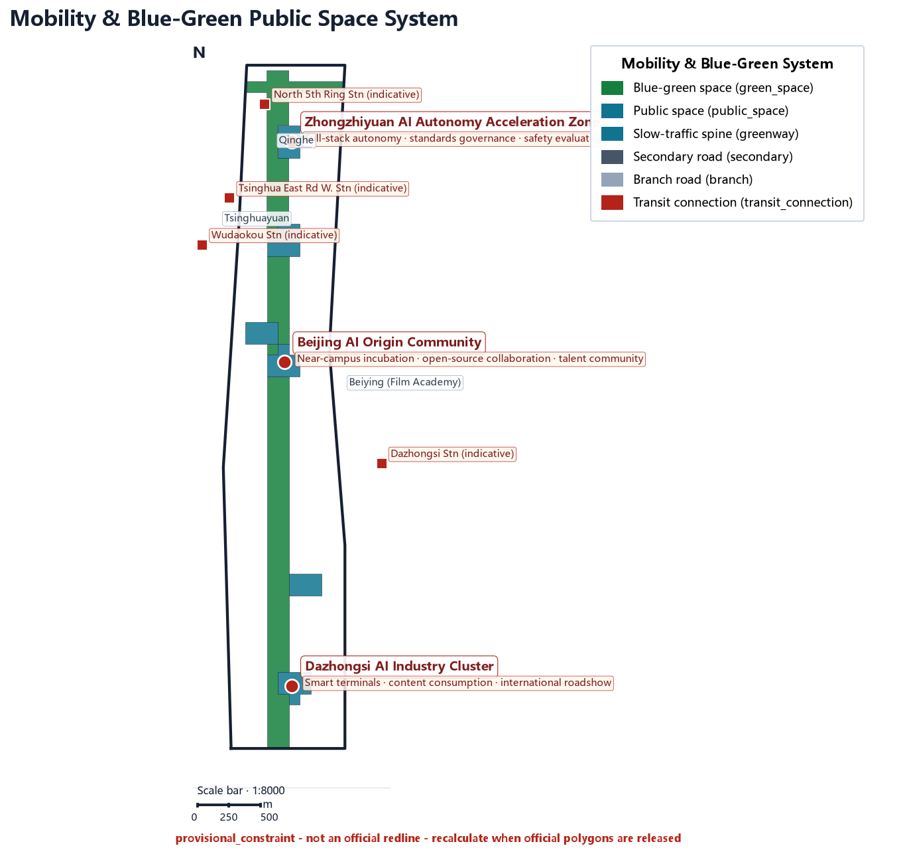
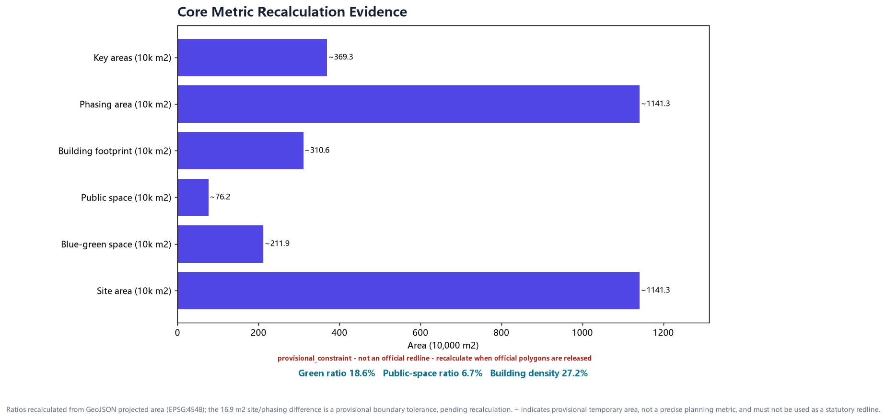
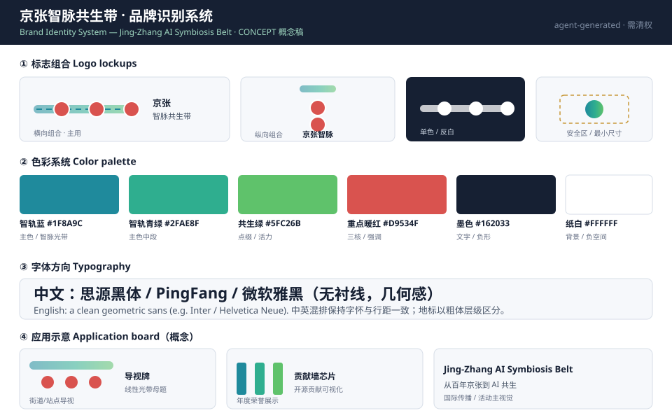
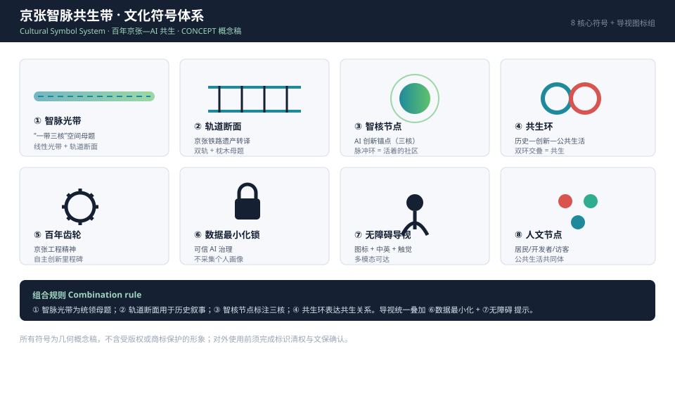
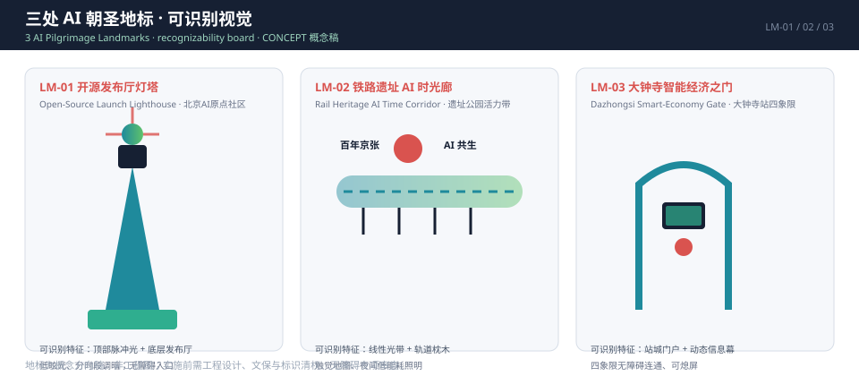

Overview Map
The overview map places land-use zoning, mobility, blue-green public space, buildings and renewal projects, and AI scenario nodes in one evidence figure, helping reviewers quickly grasp the spatial spine.

The spatial spine is "one belt, three cores, multiple scenario points, blue-green slow-traffic loop": the Jing-Zhang heritage park is the historical and public-space main axis (one belt); the three key areas - Zhongzhiyuan, Beijing AI Origin Community and Dazhongsi - are innovation anchors (three cores); the AI+ public services, industry services and urban-life nodes form the daily network (multiple scenario points); slow traffic, green space, public space and activity routes are linked as a composite loop.
Three-Tier Scope
Work is organized by the three tiers defined in the announcement: overall research scope, overall design scope, and key-area scope.
| Tier | Design question | Proposal answer | Data anchor |
|---|---|---|---|
| Overall Research Scope | AI industry ecosystem & future urban form | "University origination - open-source collaboration - enterprise translation - public experience - international communication" innovation chain | compliance_matrix.json, standard_matrix.json |
| Overall Design Scope | Industry space, urban renewal, transport & utilities, townscape | Land use, buildings, roads, green space, public space and phasing layers jointly expressed | geometry/land_use.geojson, geometry/roads.geojson |
| Key-Area Scope | Detailed design depth for three areas | Positioning, spatial moves, AI scenarios, implementation dependencies | geometry/key_areas.geojson |
Key Areas
Three detailed-design key areas (provisional_constraint, not statutory redlines).

| Key Area | Positioning | Spatial move | AI scenario |
|---|---|---|---|
| Zhongzhiyuan AI Autonomy Acceleration Zone | Garden-style full-stack autonomy block | Strengthen Qinghe frontage, industry showcase, low-carbon innovation exchange | Autonomous model testing, standards-governance sandbox |
| Beijing AI Origin Community | Near-campus translation & talent community | Campus-park-block slow-traffic stitching, outcome launch | Open-source launch hall, talent-zone services |
| Dazhongsi AI Industry Cluster | Urban smart economy & international exchange block | Dazhongsi station integration, four-quadrant walk connectivity | International roadshow lounge, data-element lounge |
Land-Use Zoning
Land-use zoning follows MNR territorial land-use classification codes, complete, closed and seamless across the design boundary.

Mobility
Transit-station integration, road micro-circulation, slow-traffic gap stitching and external traffic organization.

The transport plan responds to the announcement's requirements on North 5th Ring, the Jing-Zhang heritage park cross-ring node, Wudaokou, Tsinghua East Rd W. and Dazhongsi station, and traffic links around key enterprises; the road and slow-traffic layers stay within the submitted boundary and are cross-checked against public space, green space, industry nodes and key areas. When the boundary is provisional, transport conclusions are for temporary design discussion only.
Blue-Green Public Space
Anchored by the Jing-Zhang heritage park vitality belt, coordinating Qinghe, Xiaoyue River and the travel demand of universities, enterprises and communities.
Blue-green public space is checked by 深度, with core evidence in geometry/green_space.geojson and geometry/public_space.geojson. Green ratio 指标 and public-space ratio 指标 are recalculated from the submitted geometry.
Buildings
Building footprints distinguish retained, renovated, renewed and new objects, expressing renewed building footprints and AI building types.
Building footprint area 指标 = 3.106 million m2, building density 指标 = 27.2%. Building height, FAR and total floor area are listed as to-be-calibrated in metrics.json, pending official control-plan conditions; agent estimates must not be presented as approved metrics.
Renewal Projects
Reviewable renewal project list with location, type, dependencies and phasing.

| ID | Project | Type | Key dependency |
|---|---|---|---|
| JZ-01 | Jing-Zhang heritage park slow-traffic gap stitching | Public space / Transport | Road redline, under-bridge space |
| JZ-02 | Zhongzhiyuan Qinghe innovation frontage | Blue-green / Industry showcase | River blue line, flood control |
| JZ-03 | Origin community near-campus translation street | Urban renewal / Industry service | Campus boundary, ownership |
| JZ-04 | Dazhongsi station four-quadrant walk connectivity | Transit integration / Slow traffic | Station, intersection, pipelines |
| JZ-05 | AI public services & edge-compute nodes | New infrastructure / Public service | Energy, compute, operator |
| JZ-06 | Global AI Activity Week public route | Operations / Branding | Permits, safety, rights clearance |
Total phasing area 指标 = 11.413 million m2, advanced in three phases: near-term pilot, mid-term renewal, long-term governance. Full Feasibility fields (owner type, near/mid/long-term milestone & deliverables, cost category & concept estimate, effectiveness threshold & target) are in structured data visual/assets/renewal_projects.json (JZ-01-JZ-06).
Area topology difference note (~16.9 m2): site_area_sqm (11,412,825.386 m2) and phasing_area_sqm (11,412,842.304 m2) differ by 16.918 m2, from floating-point and topology tolerance of the provisional boundary partition; it does not represent a real area error; the whole package must be recalculated after the official redline is released.
AI Scenarios
AI+ scenarios land on concrete space and governance boundaries; each scenario states service object, location, data source, privacy boundary and human review.
Beijing AI Origin Community: outcome launch, code-contribution showcase, small roadshow.
Zhongzhiyuan: standards making, safety evaluation, visitable model-red-team node.
Belt-scope node: new-infrastructure prototype combining public service and low-carbon energy.
Jing-Zhang heritage park vitality belt: explainable wayfinding and low-intrusion sensing.
Dazhongsi: agent / smart-device showcase and international exchange.
Belt public space: walkable, shareable experience route.
Brand - Cultural Symbols - Landmarks
Originality deliverables (concept drafts): brand identity system, 8 core cultural symbols, recognizable visuals for three AI pilgrimage landmarks.



Finalized naming: Jing-Zhang AI Symbiosis Belt / 京张智脉共生带; subtitle: From a Century-Old Railway to an AI Symbiosis Belt / 从百年京张到 AI 共生. All logos, fonts and graphics are geometric concept drafts; before external use, trademark and name de-duplication and official & rights-holder confirmation must be completed (see sources.json 来源, 来源, 来源).
Core Metrics
The metric system has two types: spatial metrics recalculable from geometry and control metrics pending official control plan.
FAR, building height and total floor area have status to-be-calibrated in metrics.json (the corresponding JSON field status value is unknown), and can only be finalized after official control plan and taskbook attachments support them.
Task Coverage
Each announcement task and agent_taskbook task maps to a section, layer, metric, drawing, HTML, source, assumption and self-check item.
The compliance matrix maps each mandatory task of announcement 1.3, 1.4, 1.5 and agent.1-agent.6 item by item; design depth is constrained by the 15 depth items in design_depth_matrix.json; standard responses cover all mandatory_for_formal standards via standard_matrix.json. Any proposal that fails to cover a mandatory task cannot enter formal professional scoring.
Self-Check Status
Four gates: deterministic validation, spatial review, visual packaging check and professional evidence review.
package_state=ready_for_review; all four self-check gates must pass to enter formal professional review. The boundary is provisional; precision warnings are retained and the whole package will be recalculated after official data is released; organizer data gaps do not block content scoring.
Self-check items: validate_local_submission (schema/required/placeholders), spatial_review (land-use closure, metric recalculation consistency), visual_review (offline display tags), professional_review (standards/depth/data/metric references).
Sources
Machine-readable sources are registered in sources.json and data/source_registry.json.
The factual judgments of this proposal trace back to the following sources:
来源 来源 来源 来源 来源 来源 来源geometry/site_boundary.geojson and geometry/key_areas.geojson are provisional_constraint, official_boundary=false, used only for proposal generation, self-check and visualization.
Assumptions
Missing-data items enter assumptions.json, self-check and the risk section of the body; any conclusion lacking official conditions is downgraded to a to-be-confirmed item.
- The current site boundary and three key areas are the organizer-registered provisional rough boundary, not an official redline; precise area and redline follow the official release.
- Land use, buildings, roads, green space, public space, phasing and metrics are all generated from the provisional boundary and will be recalculated as a whole after official geometry replaces it.
- FAR, building height, total floor area, road redline, setback and facility standards lack official control-plan conditions and are listed as to-be-calibrated / to-be-confirmed.
- The Qinghe blue line, Jing-Zhang railway relics and heritage-control belt, and North 5th Ring expressway are locked as existing_condition constraints and are not subject to design changes.